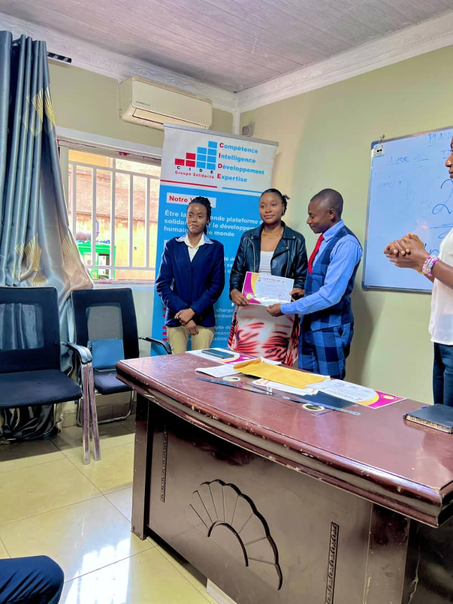
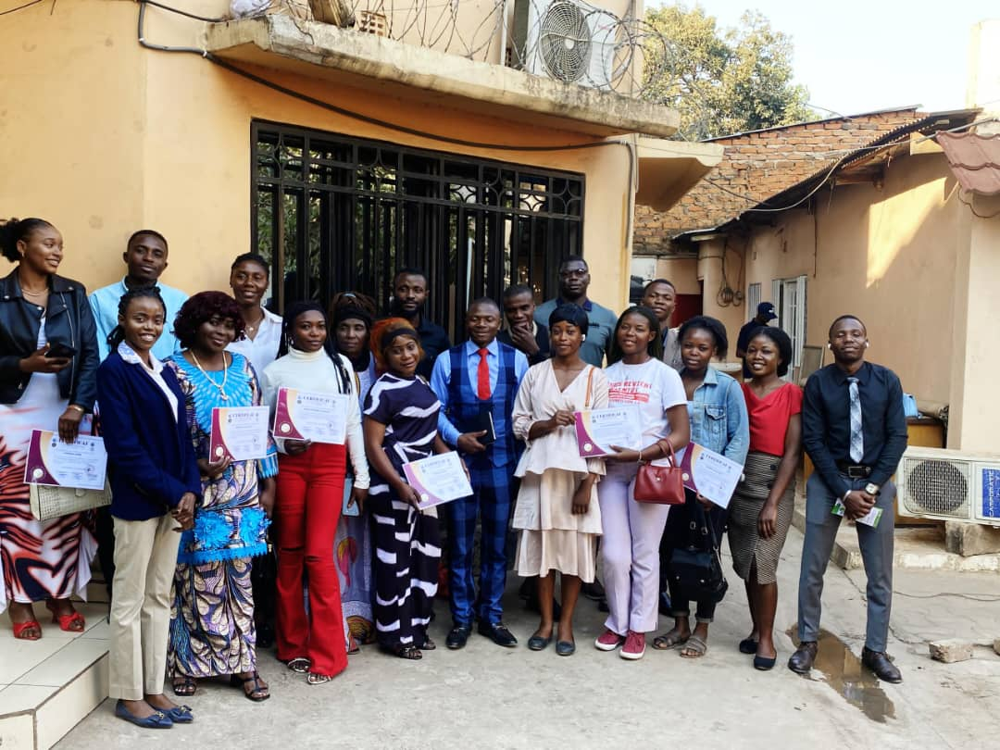
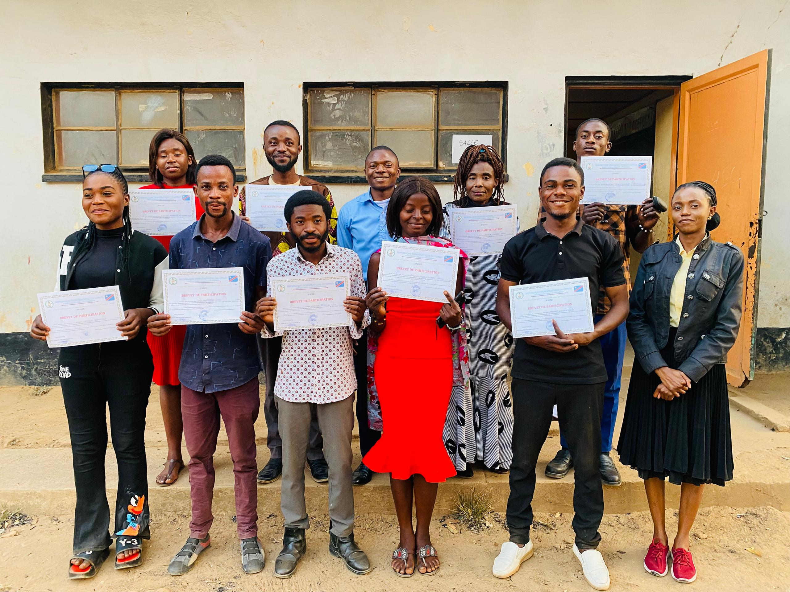

Chaque compétence acquise représente une opportunité de transformation personnelle et communautaire. La F.J.E.R.E. valorise les professionnels qui investissent dans leur perfectionnement afin d'offrir des services de qualité et de contribuer au développement durable. Leur engagement démontre que le travail bien accompli constitue un levier puissant de croissance économique et de progrès social.

L'excellence professionnelle est une valeur fondamentale que nous encourageons à travers la promotion des métiers certifiés. Les personnes qui développent leurs compétences et respectent les normes de qualité participent activement à l'amélioration des services et au renforcement de la confiance au sein des communautés.

L'innovation et la créativité permettent aux professionnels d'apporter des solutions adaptées aux défis actuels. La F.J.E.R.E. encourage l'utilisation des connaissances, des compétences techniques et de l'esprit d'initiative afin de répondre efficacement aux besoins des populations et de favoriser un développement inclusif.
Les métiers certifiés constituent une véritable opportunité d'autonomisation économique. Grâce à leurs compétences, de nombreux professionnels parviennent à créer des activités génératrices de revenus, à soutenir leurs familles et à participer activement à la croissance économique locale.

Les compétences professionnelles ne profitent pas uniquement aux individus. Elles contribuent également à l'amélioration des services offerts aux communautés et au renforcement de la cohésion sociale. La F.J.E.R.E. valorise les personnes qui utilisent leurs talents pour servir et accompagner le développement de leur environnement.
Les métiers certifiés favorisent l'émergence de leaders capables d'inspirer et de guider les autres par l'exemple. En développant leurs compétences et en partageant leur expérience, ces professionnels participent activement à la construction d'un avenir plus prospère, plus inclusif et plus durable.